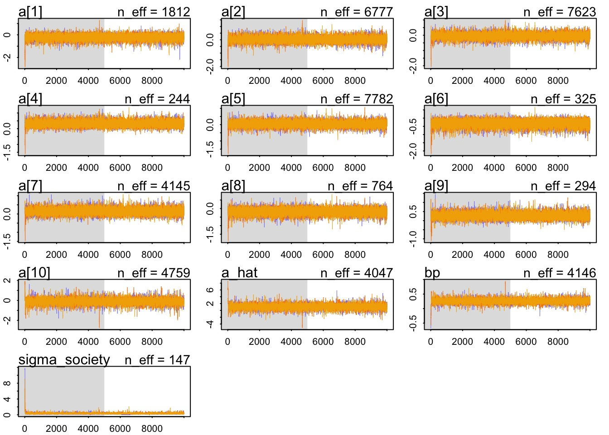
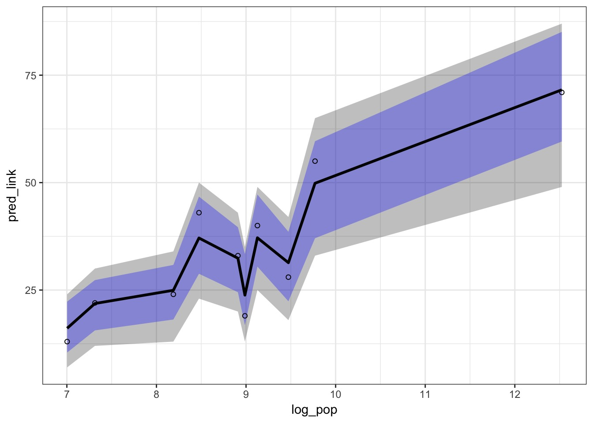
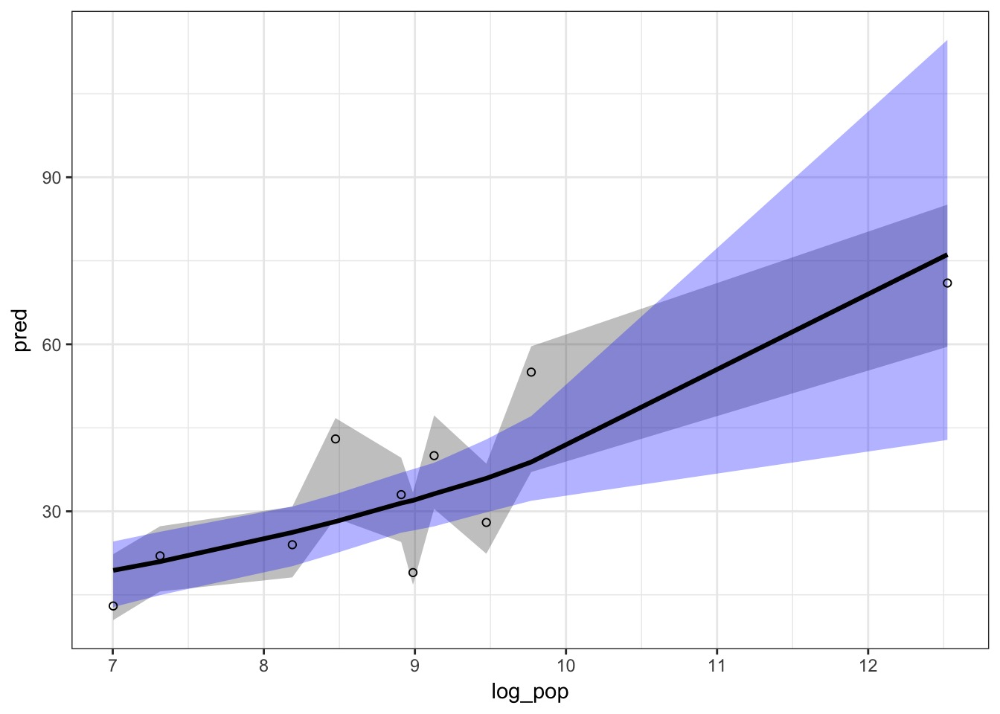
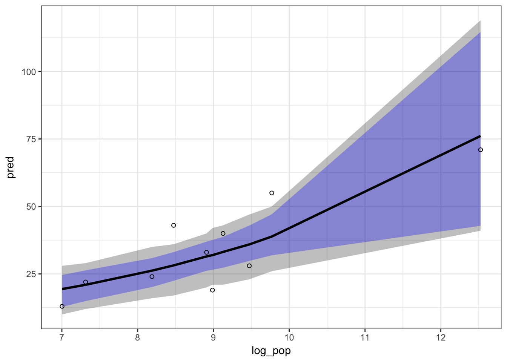
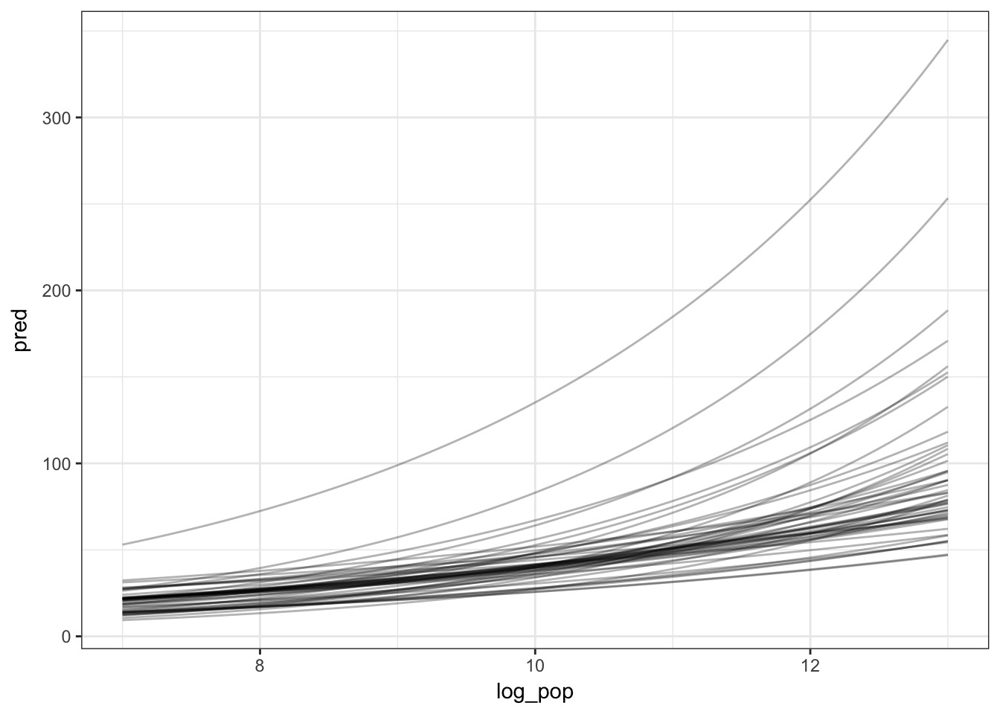
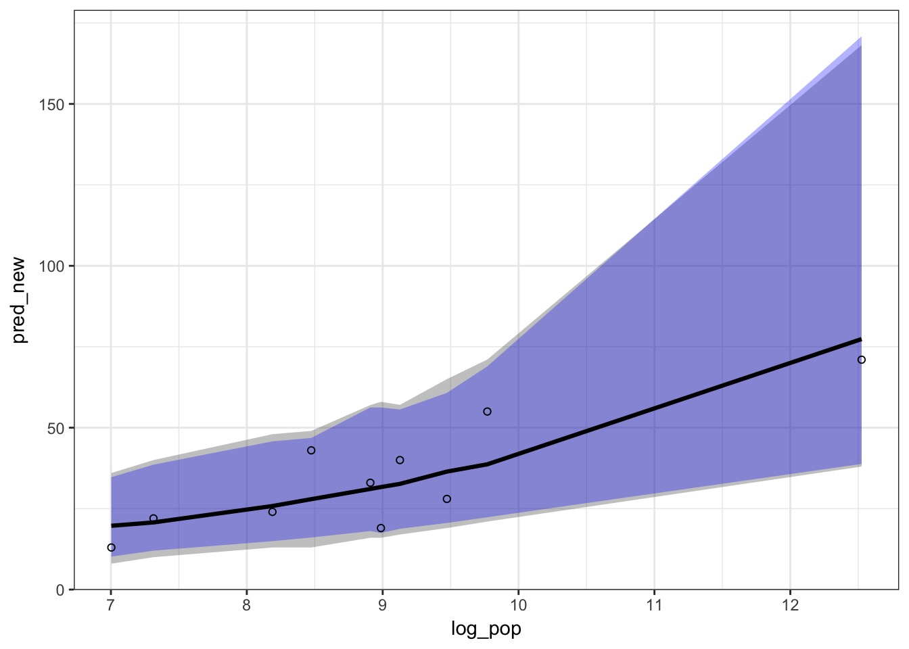
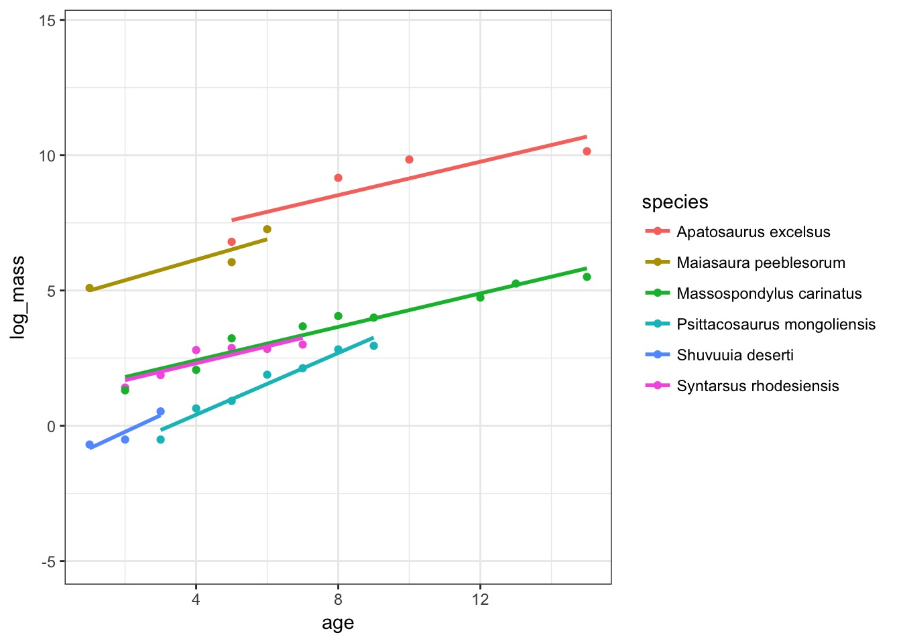

Prediction and Bayesian Mixed (aka Hierarchical, aka Multilevel) Models

Oceanic Tool Use

culture population contact total_tools mean_TU
1 Malekula 1100 low 13 3.2
2 Tikopia 1500 low 22 4.7
3 Santa Cruz 3600 low 24 4.0
4 Yap 4791 high 43 5.0
5 Lau Fiji 7400 high 33 5.0
6 Trobriand 8000 high 19 4.0Model of Tool Use with Random Variation
Note a_hat’s location to facilitate consructing predictions and efficiency
Kline$society <- 1:nrow(Kline)
Kline$log_pop <- log(Kline$population)
kline_mixed <- alist(
#Likelihood
total_tools ~ dpois(lambda),
#DGP
log(lambda) ~ a_hat + a[society] + bp*log_pop,
a[society] ~ dnorm(0, sigma_society),
#Priors
a_hat ~ dnorm(0,10),
bp ~ dnorm(0,1),
sigma_society ~ dcauchy(0,2)
)
kline_mixed_fit <- map2stan(kline_mixed, data=Kline,
iter=10000, chains=3)Convergence!

Link and Sim show variation from curve and random intercepts

Is this useful?
What are we trying to predict with multilevel models?
- Prediction based on average “fixed” effect?
- Prediction for one bock - new or old!
- Prediction marginalized over any possible random effects?
- Incorporates variance of random effects
Prediction of the Average
- Use link to get predicted values
- But, substitute in 0 for the random effects
#nrow = # of sims
a_fixed_mat_zeroes <- matrix(rep(0, 10*1000), nrow=1000, ncol=10)Now, use link, but, replace the society effect
replace lets us replace coefficient values
kline_fixed_link <- link(kline_mixed_fit,
data=Kline,
n=1000,
replace=list(a = a_fixed_mat_zeroes))
kline_fixed_sim <- sim(kline_mixed_fit,
data=Kline,
n=1000,
replace=list(a = a_fixed_mat_zeroes))Compare Fixed Fit Error to Sample Fit Error

Fit and Prediction Error for Fixed Effects Only

What if we had a new blocks, and wanted their trend?
- For a single block, a single draw of the random effect will suffice
- Use the same way as the fixed only model
- Draw of random effects comes from using the \(\sigma_{society}\) in this case
- But, parameters values must come from same draws of \(\sigma_{society}\)
Extracting New Trends - Easiest by hand!
sims <- 50
kline_samp <- extract.samples(kline_mixed_fit, n=sims)
#fill in new a_hat values
kline_samp$a_new <- rnorm(sims, 0, kline_samp$sigma_society)
#remove matrices of random effects
kline_samp <-kline_samp[setdiff(names(kline_samp), "a")]
#make into data frame
kline_samp <- as.data.frame(kline_samp)
#now make a new data frame
pred_df <- crossing(log_pop = seq(7,13, length.out=100),
kline_samp) %>%
mutate(pred = exp(a_new + a_hat + bp*log_pop))New Trends show variability in Possibilities

Can see uncertainty in trends for new blocks
What if we want to see full distribution of possible new observations
a[society] ~ dnorm(0, sigma_society)implies any new society is drawn from that distribution
- Hence, in addition to fit and prediction uncertainty, we also have new block uncertainty
- Straightforward to see both fit and prediction error
- We are marginalizing over random effects
Build that new random effects matrix!
Need as many samples as outputs from sim and link
10 “blocks” * 1000 sims
n_pts <- 10*1000
kline_samp_all <- extract.samples(kline_mixed_fit, n=n_pts)
## New random effects
new_ranefs <- rnorm(n_pts, 0, kline_samp_all$sigma_society)
## New matrix
a_ranef_new <- matrix(new_ranefs, ncol=10, nrow=1000)Now, use link, but, replace the society effect
replace lets us replace coefficient values
kline_new_link <- link(kline_mixed_fit,
data=Kline,
n=1000,
replace=list(a = a_ranef_new))
kline_new_sim <- sim(kline_mixed_fit,
data=Kline,
n=1000,
replace=list(a = a_ranef_new))Marginalized Counterfactual Predictions

Suggests random effects uncertainty is large relative to prediction uncertainty
Exercise: DINOSAURS!!!!

- Make predictions with fixed effects only and one other